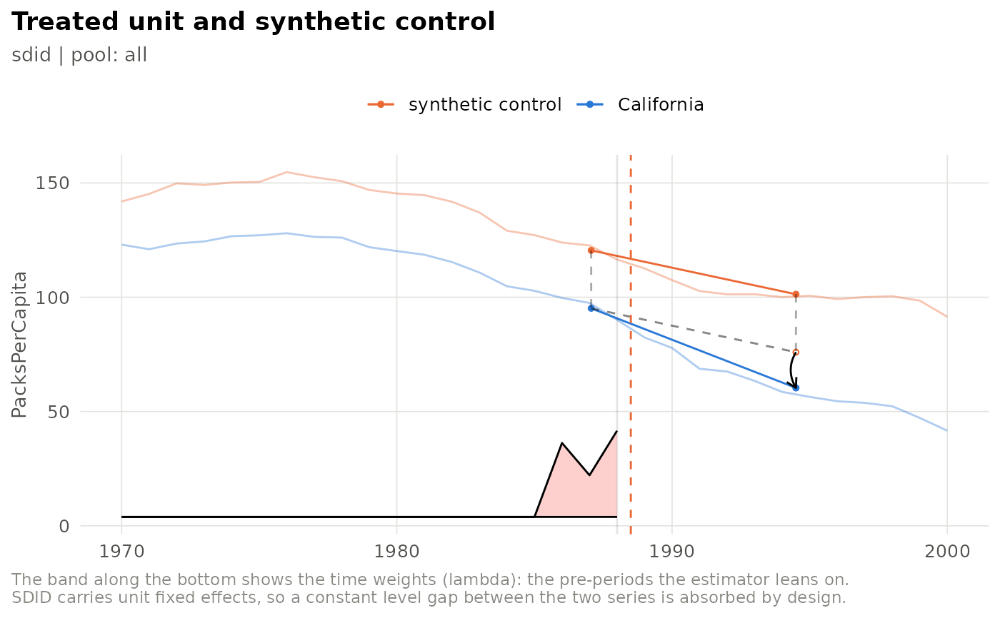
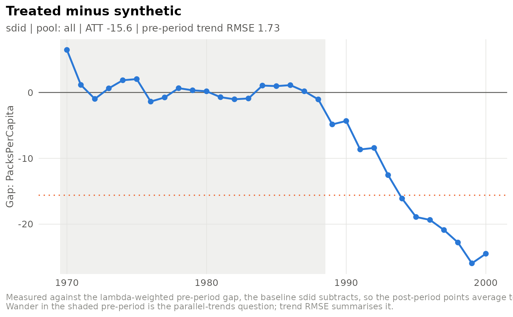
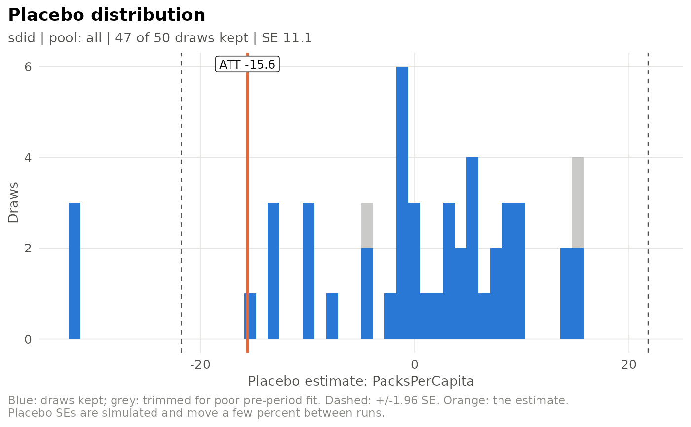

Every plot takes an sdid_run from fit_spec() (or load_run()) and
returns a ggplot object, so it can be themed, saved or combined further.
Usage
plot_sdid_trajectory(run, se_method = "none")
plot_gap_path(run)
plot_event_study(run)
plot_donor_weights(run, top_n = 20L, material = 0.01)
plot_lambda_weights(run)
plot_sdid_units(run)
plot_placebo_distribution(run, bins = 50)
plot_placebo_trim(run, bins = 50)
plot_donor_influence(run, label_n = 6L)
plot_scm_gaps(run, corrected = FALSE)Arguments
- run
An
sdid_run.- se_method
Passed to
synthdid::synthdid_plot().- top_n
Donors to show.
- material
Weight marked as the materiality threshold.
- bins
Histogram bins.
- label_n
Donors to label.
- corrected
For
plot_scm_gaps(): plot bias-corrected gaps instead of the uncorrected ones.
Details
plot_sdid_trajectory()– treated unit and synthetic control over time, with the time weights along the bottom (synthdid's own plot, restyled).plot_gap_path()– treated minus synthetic in every period, measured against the baseline the estimator subtracts, so the post-period points average exactly to the ATT.plot_event_study()– the effect in each post-treatment period.plot_donor_weights(),plot_lambda_weights()– unit and time weights.plot_sdid_units()– each donor's contribution (synthdid's units plot).plot_placebo_distribution(),plot_placebo_trim()– the placebo reference distribution behind the standard error, and where trimming cut it.plot_donor_influence()– each donor's share of the estimate against its share of the standard error (seedonor_influence()).plot_scm_gaps()– forestimator = "scm": the treated unit's gap against every placebo's, the classic permutation figure.
Plots that need the fitted object or the placebo draws require a run
fitted with keep = "all" (the default).
Examples
# \donttest{
run <- fit_spec(sdid_spec(inference = list(replications = 50)), prop99_panel(), seed = 1)
plot_sdid_trajectory(run)

plot_gap_path(run)

plot_placebo_distribution(run)

# }